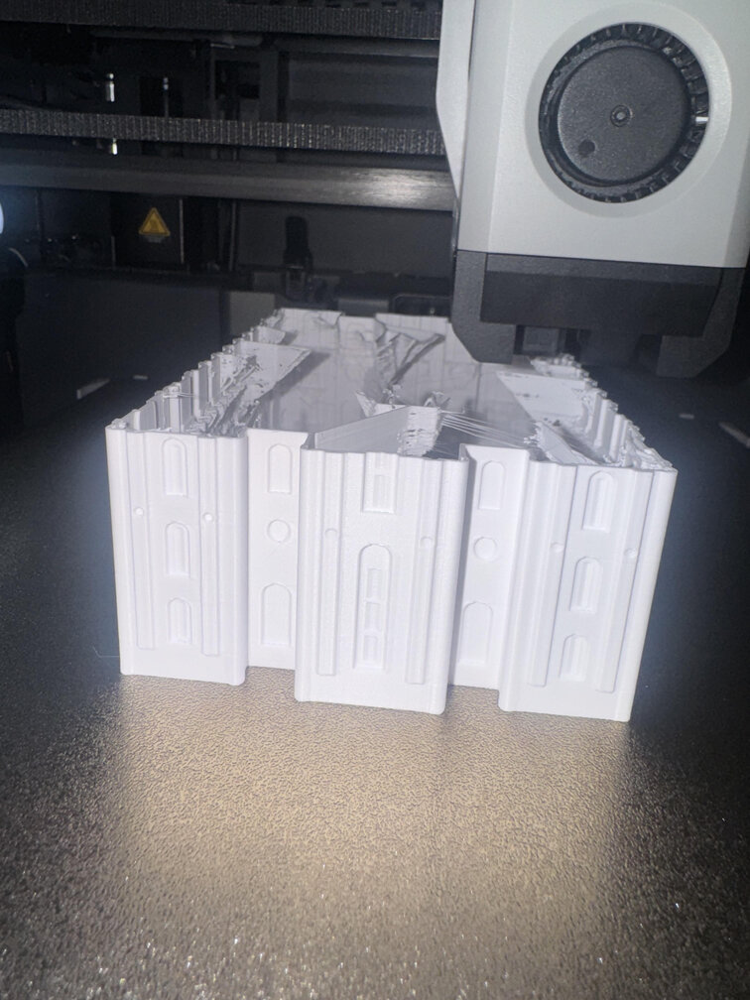

About me: My name is Erik Lofgren. I am a current stutdent at BYU Idaho. I am majoring in Applied Bussiness with a minor Web and Software Development.
About CAD: Computer Aided Design (CAD) is the process of using computer software to create designs for various purposes including, but not limited to engineering, architecture, and manufacturing.
You can use CAD software create simple or complex 2D or 3D models.

You can use CAD for simulations, stress testing, prototyping, and many other processes.
About Computer Programming: Computer programming is the process of writing, testing, and maintaining the instructions that a computer follows to perform various tasks. The instructions, code, are written in various syntax, such as JavaScript, Python, and many other types of languages.
People write code for software, websites, and other applications. It is necessary to debug errors, optimize performance, as well as ensure security.